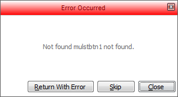

Script Debugger
Table of Contents
- Overview
- Finding Errors in Scripts
- Debugger Settings
- Turning on the Debugger
- The DEBUG()Command
- Loading scripts into the Debugger's Module Window
- Using the Trace into Next Script Command
- Starting the Debugger Automatically
- Debugger Menu Commands
- Using the Debugger
- Profiling Scripts
- Extended Debugging Information
The Script Debugger allows the programmer to step through an Xbasic script or function and watch as Alpha Anywhere executes each line. You can selectively debug only portions of your code by placing debug(1) (start debugging) and debug(0) (end debugging) commands around the code of interest. You can set breakpoints and examine the value of variables. The debugger's main window is divided into two areas: the Module window shows the script that is being debugged. The Watch window shows the variables and properties whose values you want to inspect as the script runs.
|
Finding Errors in Scripts
As you design and run scripts, there are three types of errors that can occur:
Compilation errors - Usually caused by a typographic error, the absence of a required parameter or statement, or the incorrect usage of a function or method. These errors prevent Alpha Anywhere from successfully compiling the script into machine instructions. Compilation errors are easy to find since Alpha Anywhere detects them before the script is run, can direct you to the line in question, and can briefly describe the problem.
Run-time errors - Occur only when a script is run. These errors are generated when scripts produce bad or illegal values, or try to run an impossible operation. In most cases you should design your scripts with run-time errors in mind. For example, the Disk Full run-time error might occur when you create a new file. Since there is no way to know if the disk is full until you try to create the file, you should write an error handling routine to trap for this possibility and have your script act accordingly. Use the "ON ERROR GOTO" statement to handle run-time errors.
Logic errors - The hardest to find; the only indication of a logic error may be a bad value or an unexpected result. Alpha Anywhere cannot tell you when a logic error is present, so it is up to you to test for and find these problems. To help you in this, Alpha Anywhere provides a debugger which allows you to trace through the logic flow of the script more carefully, tracking the values of variables and object properties. A script (or program) that does not work correctly is said to have a "bug" in it. The act of finding and correcting these problems is what is traditionally called "debugging".
Debugger Settings
The Debugger Settings dialog allows you to set certain debugger options. To display this dialog, select the Debug > Settings command.
The Preload event scripts option will cause the debugger to load into memory the event scripts for a form when the form is loaded into memory. You can then use the File > Open command to display a script in the Module window. If this option is not selected, the debugger only loads an event script into its memory when the script executes for the first time.
|
The "Debugger thread priority" options give you control over the execution of background threads. The default option is to interrupt background threads for faster debugging.
The "Error Trapping" options specify under which conditions the debugger will alert you if an error occurs in a script.
Do not trap errors - lets Alpha Anywhere (and not the debugger) report errors.
Trap unhandled errors - will display the "Error Trap" window whenever an error occurs for which there is no ON ERROR handler. If there is an ON ERROR handler, it is assumed that the script will handle the error.
Trap all errors - will stop on any error and display the "Error Trap" window (even if there is an ON ERROR handler).
The Script Error Trap window looks like this:

Turning on the DebuggerThere are three ways in which you can turn on the Alpha Anywhere script debugger:
Insert the DEBUG() command in the script at the point where you want to start debugging the script. Debug(1) turns on the debugger and Debug(0) turns off the debugger.
Load the script that you want to debug into the debugger's Module window and set a break point. The next time this script is executed, the debugger will automatically be invoked at the break point.
Select the Debug > Trace into next script command from the Debugger's Debug menu. The next script that is invoked will automatically be displayed in the debugger's Module window.
The following script shows how the DEBUG() command is used. This script is attached to a button on a form. It enters a new record into the table. The debugger will start when code execution reaches the debug(1) statement and will stop when it reaches the debug(0) statement.
|
Loading scripts into the Debugger's Module Window
To use this method of invoking the debugger:
Run the debugger by selecting the View > Debugger command from the Alpha Anywhere menu bar. If the debugger has already been launched, then simply activate it by clicking its icon on the task bar.
Select File > Open. The Open a script dialog is displayed.
Depending on the setting of the "Preload event scripts setting" on the Debugger Settings dialog, the script that you want to debug may not be listed in the dialog. If so, close the dialog, and select the Debug > Load event scripts command to load the scripts that are attached to all of the events of the open form and browse windows into memory. Then re-select the File > Open command and select the script that you want to debug. It will now appear in the Module window.
Highlight a line in the script and press F9 to set a breakpoint.
Return to Alpha Anywhere. The next time the script for which you just set a breakpoint is executed, the script debugger will be activated and the script will be displayed in the debugger's Module window.
To use this method:
Run the debugger by selecting the View > Debugger command from the Alpha Anywhere menu bar. If the debugger has already been launched, then simply activate it by clicking its icon on the task bar.
Select the Debug > Trace into next script command.
Return to Alpha Anywhere. The next script that is executed will cause the debugger to be activated and the script will be shown in the debugger's Module window.
To use this method:
Click View > Settings... > Preferences > Script Errors.
Select "Yes" in the Value list box.
Debugger Menu Commands
|
Icon |
Menu Item |
Hot-Key |
Description of the command |
|
|
Go |
F5 |
If the script is stopped, continue execution until the script is finished, or a breakpoint is reached. |
|
|
Break |
F7 |
Halts execution of the script. This is the equivalent of putting a "Stop" command into the script. |
|
|
Step |
F12 |
Executes the current line of the script, then pauses. This differs from the "Trace" command in that it will not step into functions and scripts that are called by the current line. |
|
|
Step Out | If you are inside of a function call and want to return back to the function that called it, step out will take you there. | |
|
|
Trace |
F11 |
Executes the current line of the script, then pauses. This differs from the "Step" command in that if the current line calls a function, or another script, the debugger will trace into the called function or script. |
|
|
Skip |
|
Skips over current line without executing it. The script will resume execution on the subsequent line. |
|
|
Run to Cursor |
F4 |
Runs the script until the highlighted line is reached. This operates like a one-time breakpoint executing the script until the selected line is reached. |
|
|
Trace into next script |
|
Trap the next script. The next time any script is played, it will automatically be displayed in the debugger. |
|
|
Set breakpoint |
F9 |
Set a breakpoint on the currently selected line. Every time the selected line is reached, the debugger will stop. |
|
|
Remove breakpoint |
F8 |
Clear a breakpoint from the currently selected line. Removes breakpoint from the selected line |
Using the debugger is easy.
Insert the debug(1) command at the top of your script, but within code that will be executed. If you placed the debug(1) above the function statement, it would not be executed.
Run the function, script, or form in the normal fashion (for example, by clicking the lightning bolt at the left of the control panel). The objective is to cause this piece of code to run. The current line indicator will stop on the first executable line after the debug(1) statement.
Scroll down and double-click where you would like the debugger to stop. Note : You can set as many breakpoints as you want.
Click the button to start execution of the script. Code execution will stop at the breakpoint.
Enter the name of any variable or enter any expression you want to evaluate in the Expression column at the bottom of the screen. Press Tab and the Value column will display its current value. Press the step button to step through lines of the script to see which branches it follows.
Remove any unneeded breakpoints by double clicking on them. Either let the script run to completion or press to stop it immediately.
Another useful technique for finding errors in a script is to use the PROFILER_BEGIN() and PROFILER_END() commands in your Xbasic script. Insert PROFILER_BEGIN()at the start of a section of Xbasic code and PROFILER_END()at the end of a section. Then run the code and open the Trace window. Alpha Anywhere will show you each line of Xbasic that was executed.
Extended Debugging Information
You can cause extended debugging information to be written to the standard Windows event log when an Xbasic script error occurs. Refer to A5.SYSTEM_MODE_SET(). To view the Windows event log, click Start on the Windows desktop, go to the Windows Control Panel > Administrative Tools > Event Viewer.
See Also